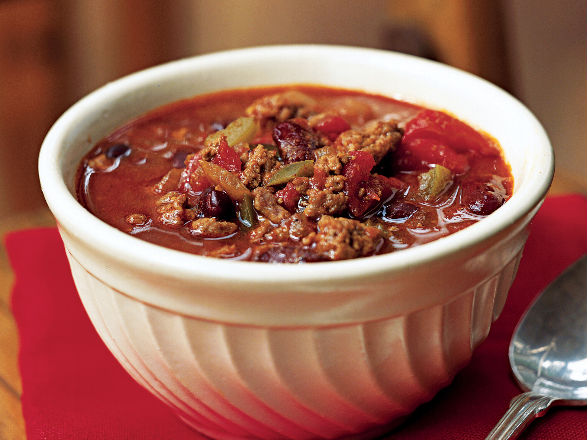

Chili Recipe

This is a delicous chili recipe of my design. It is simple and cheap to make. All you need is some beans, beef, and tomatoes. Let's get started!
Ingredients
Small can of tomatoe paste
Steps
1. Dice up the onion
2. In a medium skillet begin to cook the beef and the diced onion
3. As the beef is frying get a medium-large pot and place on stove. Begin to open the cans of tomatoes and beans
4. Dump the tomatoes into the pot. Before adding the beans rinse them in a strainer, then add to pot. Make sure the beef is not burning
5. Begin cooking the tomatoe and beans in the pot at medium heat. At this point add chili and garlic powder. Add it to your taste
6. When beef is done strain the greese out. Do not strain it into the sink. Properly dispose of it. Google how if unsure
7. Add beef to pot!
8. When the pot of chili is warm or at desired temprature serve.